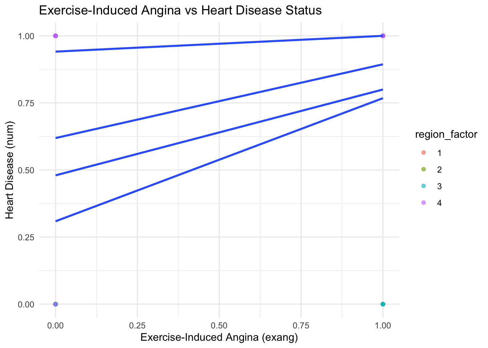
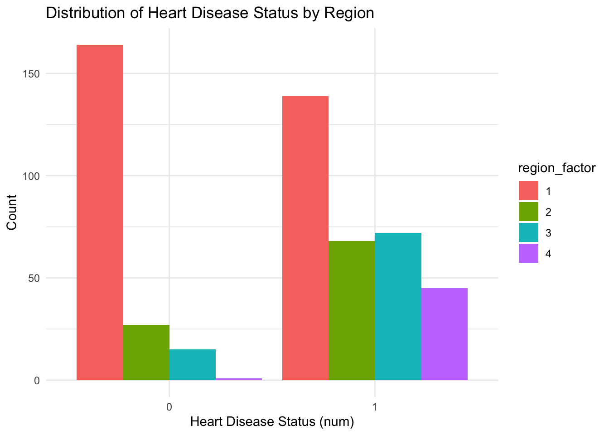
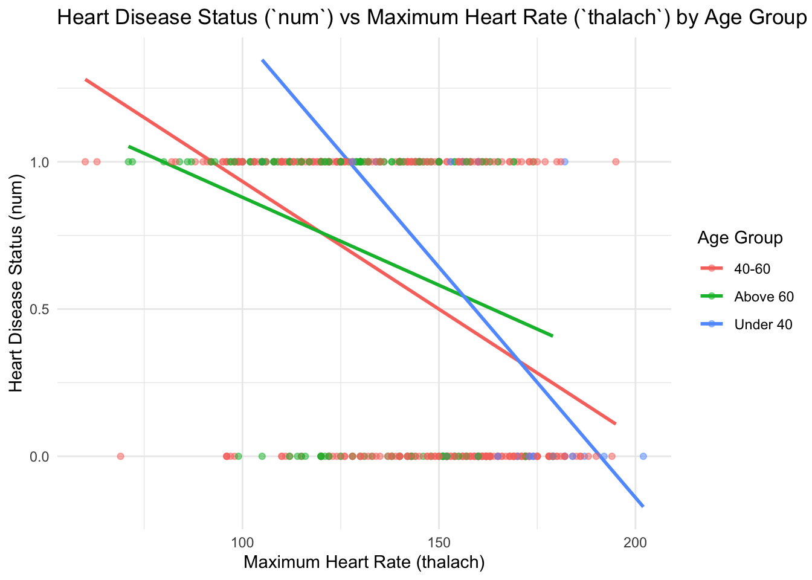
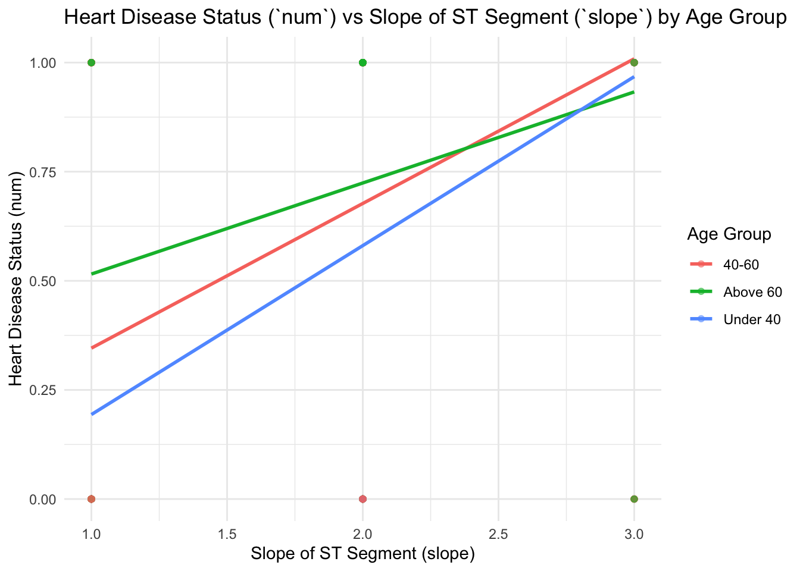
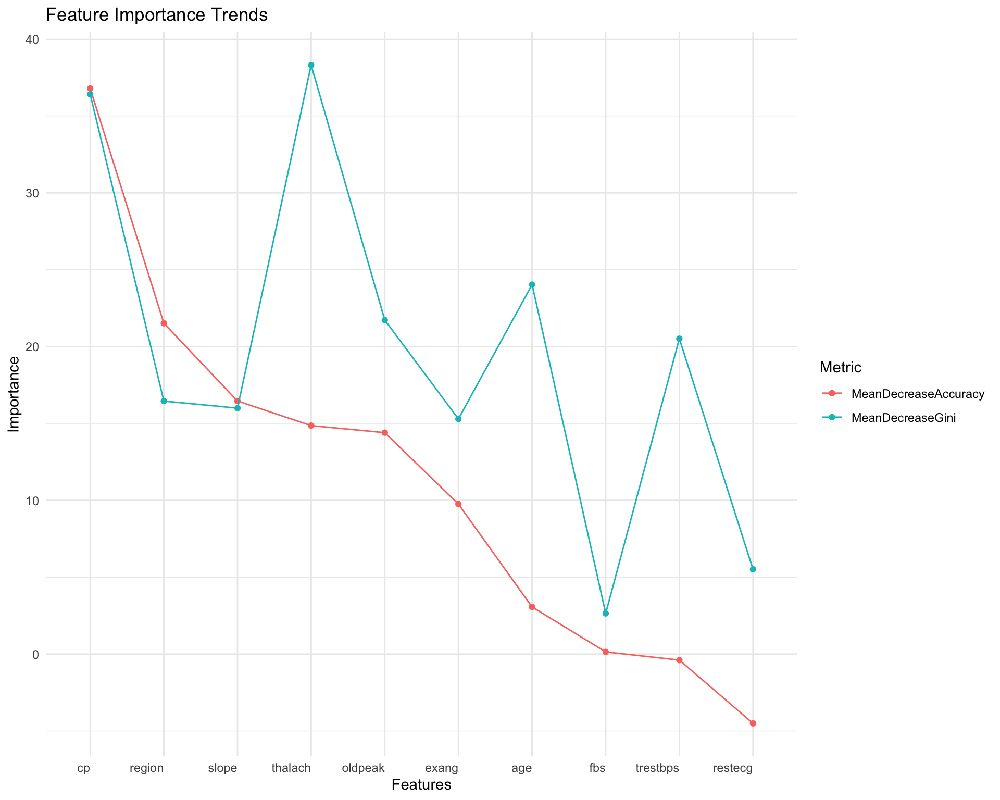

Modelling
library(tidyverse)## ── Attaching core tidyverse packages ──────────────────────── tidyverse 2.0.0 ──
## ✔ dplyr 1.1.4 ✔ readr 2.1.5
## ✔ forcats 1.0.0 ✔ stringr 1.5.1
## ✔ ggplot2 3.5.1 ✔ tibble 3.2.1
## ✔ lubridate 1.9.3 ✔ tidyr 1.3.1
## ✔ purrr 1.0.2
## ── Conflicts ────────────────────────────────────────── tidyverse_conflicts() ──
## ✖ dplyr::filter() masks stats::filter()
## ✖ dplyr::lag() masks stats::lag()
## ℹ Use the conflicted package (<http://conflicted.r-lib.org/>) to force all conflicts to become errorslibrary(janitor)##
## 载入程序包：'janitor'
##
## The following objects are masked from 'package:stats':
##
## chisq.test, fisher.testlibrary(car)## 载入需要的程序包：carData
##
## 载入程序包：'car'
##
## The following object is masked from 'package:dplyr':
##
## recode
##
## The following object is masked from 'package:purrr':
##
## somelibrary(skimr)
library(broom)Interpreting num: The values for num represent the
degree of narrowing in the coronary arteries: 0: No disease (< 50%
diameter narrowing). 1-4: Increasing severity of disease (> 50%
diameter narrowing, with different severities).
For convenience, this variable will binarized: 0: No heart disease (value 0 in num). 1: Presence of heart disease (values 1-4 in num).
*but if we want to analyze the severity of heart disease num will be treated as a categorical variable. example code: cleaned_data <- data |> mutate(num = factor(num, levels = c(0, 1, 2, 3, 4), labels = c(“No Disease”, “Mild”, “Moderate”, “Severe”, “Very Severe”)))
cleveland <- read_csv("./data/cleveland.csv", na = "?") |>
clean_names() |>
mutate(num = if_else(num == 0, 0, 1)) # Binarize the `num` variable: 0 = no heart disease, 1 = heart disease## Rows: 303 Columns: 14
## ── Column specification ────────────────────────────────────────────────────────
## Delimiter: ","
## dbl (14): age, sex, cp, trestbps, chol, fbs, restecg, thalach, exang, oldpea...
##
## ℹ Use `spec()` to retrieve the full column specification for this data.
## ℹ Specify the column types or set `show_col_types = FALSE` to quiet this message.# |> drop_na() Removes rows with any missing values (optional, adjust as needed)
hungary = read_csv("./data/hungarian.csv", na = "?") |>
clean_names() |>
mutate(num = if_else(num == 0, 0, 1))## Rows: 294 Columns: 14
## ── Column specification ────────────────────────────────────────────────────────
## Delimiter: ","
## dbl (14): age, sex, cp, trestbps, chol, fbs, restecg, thalach, exang, oldpea...
##
## ℹ Use `spec()` to retrieve the full column specification for this data.
## ℹ Specify the column types or set `show_col_types = FALSE` to quiet this message.# |> drop_na() Removes rows with any missing values (optional, adjust as needed)
long_beach = read_csv("./data/long_beach_va.csv", na = "?") |>
clean_names() |>
mutate(num = if_else(num == 0, 0, 1))## Rows: 200 Columns: 14
## ── Column specification ────────────────────────────────────────────────────────
## Delimiter: ","
## dbl (14): age, sex, cp, trestbps, chol, fbs, restecg, thalach, exang, oldpea...
##
## ℹ Use `spec()` to retrieve the full column specification for this data.
## ℹ Specify the column types or set `show_col_types = FALSE` to quiet this message.# |> drop_na() Removes rows with any missing values (optional, adjust as needed)
switzerland = read_csv("./data/switzerland.csv", na = "?") |>
clean_names() |>
mutate(num = if_else(num == 0, 0, 1))## Rows: 123 Columns: 14
## ── Column specification ────────────────────────────────────────────────────────
## Delimiter: ","
## dbl (14): age, sex, cp, trestbps, chol, fbs, restecg, thalach, exang, oldpea...
##
## ℹ Use `spec()` to retrieve the full column specification for this data.
## ℹ Specify the column types or set `show_col_types = FALSE` to quiet this message.# |> drop_na() Removes rows with any missing values (optional, adjust as needed) cor(cleveland$chol, cleveland$num, use = "complete.obs")## [1] 0.08516361Variable Selection
Data Preprocessing
cleveland$region = "Cleveland"
hungary$region = "Hungarian"
long_beach$region = "Long_Beach_VA"
switzerland$region = "Switzerland"
combined_data_one = bind_rows(cleveland, hungary, long_beach, switzerland)
colnames(combined_data_one) = c("age", "sex", "cp", "trestbps", "chol", "fbs",
"restecg", "thalach", "exang", "oldpeak", "slope",
"ca", "thal", "num", "region")
combined_data_two = combined_data_one |>
mutate(region = case_when(
region == "Cleveland" ~ 1,
region == "Hungarian" ~ 2,
region == "Long_Beach_VA" ~ 3,
region == "Switzerland" ~ 4,
)) |>
select(-thal,-ca) |>
drop_na()
case_data = combined_data_two |>
filter(num == 1)
control_data = combined_data_two |>
filter(num == 0)
print(case_data)## # A tibble: 324 × 13
## age sex cp trestbps chol fbs restecg thalach exang oldpeak slope
## <dbl> <dbl> <dbl> <dbl> <dbl> <dbl> <dbl> <dbl> <dbl> <dbl> <dbl>
## 1 67 1 4 160 286 0 2 108 1 1.5 2
## 2 67 1 4 120 229 0 2 129 1 2.6 2
## 3 62 0 4 140 268 0 2 160 0 3.6 3
## 4 63 1 4 130 254 0 2 147 0 1.4 2
## 5 53 1 4 140 203 1 2 155 1 3.1 3
## 6 56 1 3 130 256 1 2 142 1 0.6 2
## 7 48 1 2 110 229 0 0 168 0 1 3
## 8 58 1 2 120 284 0 2 160 0 1.8 2
## 9 58 1 3 132 224 0 2 173 0 3.2 1
## 10 60 1 4 130 206 0 2 132 1 2.4 2
## # ℹ 314 more rows
## # ℹ 2 more variables: num <dbl>, region <dbl>print(control_data)## # A tibble: 207 × 13
## age sex cp trestbps chol fbs restecg thalach exang oldpeak slope
## <dbl> <dbl> <dbl> <dbl> <dbl> <dbl> <dbl> <dbl> <dbl> <dbl> <dbl>
## 1 63 1 1 145 233 1 2 150 0 2.3 3
## 2 37 1 3 130 250 0 0 187 0 3.5 3
## 3 41 0 2 130 204 0 2 172 0 1.4 1
## 4 56 1 2 120 236 0 0 178 0 0.8 1
## 5 57 0 4 120 354 0 0 163 1 0.6 1
## 6 57 1 4 140 192 0 0 148 0 0.4 2
## 7 56 0 2 140 294 0 2 153 0 1.3 2
## 8 44 1 2 120 263 0 0 173 0 0 1
## 9 52 1 3 172 199 1 0 162 0 0.5 1
## 10 57 1 3 150 168 0 0 174 0 1.6 1
## # ℹ 197 more rows
## # ℹ 2 more variables: num <dbl>, region <dbl>print(combined_data_two)## # A tibble: 531 × 13
## age sex cp trestbps chol fbs restecg thalach exang oldpeak slope
## <dbl> <dbl> <dbl> <dbl> <dbl> <dbl> <dbl> <dbl> <dbl> <dbl> <dbl>
## 1 63 1 1 145 233 1 2 150 0 2.3 3
## 2 67 1 4 160 286 0 2 108 1 1.5 2
## 3 67 1 4 120 229 0 2 129 1 2.6 2
## 4 37 1 3 130 250 0 0 187 0 3.5 3
## 5 41 0 2 130 204 0 2 172 0 1.4 1
## 6 56 1 2 120 236 0 0 178 0 0.8 1
## 7 62 0 4 140 268 0 2 160 0 3.6 3
## 8 57 0 4 120 354 0 0 163 1 0.6 1
## 9 63 1 4 130 254 0 2 147 0 1.4 2
## 10 53 1 4 140 203 1 2 155 1 3.1 3
## # ℹ 521 more rows
## # ℹ 2 more variables: num <dbl>, region <dbl>For Continuous case
For continuous variables, we use mean and standard deviation (std) to describe the distribution in overall samples, samples of control(num = 0), and samples of case(num = 1). Then, we use t-test to examine whether the means of these variables are significantly different between case group and control group (significance level = 0.05).
# 1. Mean and Std for Continuous Variables (Overall)
list_conti_all = list(
age = combined_data_two$age,
trestbps = combined_data_two$trestbps,
chol = combined_data_two$chol,
thalach = combined_data_two$thalach,
oldpeak = combined_data_two$oldpeak
) |>
lapply(na.omit)
mean_all = sapply(list_conti_all, mean) |>
as.data.frame()|>
setNames("Overall Mean")
std_all = sapply(list_conti_all, sd) |>
as.data.frame() |>
setNames("Overall Std")
# 2. p-value of t-test for Continuous Variables
t_test = function(variable) {
t_test_result = t.test(combined_data_two[[variable]] ~ combined_data_two$num)
return(data.frame(
variable = variable,
p_value = t_test_result$p.value
))
}
p_value =
lapply(c("age", "trestbps", "chol", "thalach", "oldpeak"), t_test) |>
bind_rows() |>
as.data.frame()
# 3. Mean and Std for Control Group
list_conti_control = list(
age = control_data$age,
trestbps = control_data$trestbps,
chol = control_data$chol,
thalach = control_data$thalach,
oldpeak = control_data$oldpeak
) |>
lapply(na.omit)
mean_control = sapply(list_conti_control, mean) |>
as.data.frame() |>
setNames("Control Mean")
std_control = sapply(list_conti_control, sd) |>
as.data.frame() |>
setNames("Control Std")
# 4. Mean and Std for Case Group
list_conti_case = list(
age = case_data$age,
trestbps = case_data$trestbps,
chol = case_data$chol,
thalach = case_data$thalach,
oldpeak = case_data$oldpeak
) |>
lapply(na.omit)
mean_case = sapply(list_conti_case, mean) |>
as.data.frame() |>
setNames("Case Mean")
std_case = sapply(list_conti_case, sd) |>
as.data.frame() |>
setNames("Case Std")
conti_des_df =
as.data.frame(cbind(mean_all, std_all, mean_control, std_control, mean_case, std_case, p_value))
conti_des_df = conti_des_df[, -grep("variable", colnames(conti_des_df))] |>
knitr::kable(digits = 6)
conti_des_df| Overall Mean | Overall Std | Control Mean | Control Std | Case Mean | Case Std | p_value | |
|---|---|---|---|---|---|---|---|
| age | 54.843691 | 8.824069 | 52.908213 | 9.248788 | 56.080247 | 8.323177 | 0.000074 |
| trestbps | 133.406780 | 18.969496 | 129.734300 | 16.322060 | 135.753086 | 20.158831 | 0.000179 |
| chol | 216.854991 | 99.014215 | 237.043478 | 68.313903 | 203.956790 | 112.615863 | 0.000030 |
| thalach | 138.463277 | 25.833649 | 152.758454 | 22.958375 | 129.330247 | 23.329890 | 0.000000 |
| oldpeak | 1.218456 | 1.105150 | 0.726087 | 0.805741 | 1.533025 | 1.155598 | 0.000000 |
Based on the result, we can find that all five features are significantly different between case and control.
For Discrete case
For binary and categorical variables, we use count (n) and percentage (pct) to describe the distribution in overall samples, samples of control(num = 0), and samples of case(num = 1). Then, as the data meet the assumption, we use chi-sq test to examine whether the distribution of these variables are significantly different between case group and control group (significance level = 0.05).
list_cat_all = as.data.frame(list(
sex = combined_data_two$sex,
cp = combined_data_two$cp,
fbs = combined_data_two$fbs,
restecg = combined_data_two$restecg,
exang = combined_data_two$exang,
slope = combined_data_two$slope,
region = combined_data_two$region
))
# 1. Overall Counts and Chi-Square Test
cat_vars = names(list_cat_all)
count_all_function = function(variable) {
table_value = table(list_cat_all[[variable]], combined_data_two$num)
chi_sq_test = chisq.test(table_value)
count = table(list_cat_all[[variable]])
total = sum(count)
pct = count / total
result_df = tibble(
variable = rep(variable, length(count)),
category = names(count),
n = as.numeric(count),
pct = round(pct, 3),
p_value = round(chi_sq_test$p.value, 3)
)
return(result_df)
}
cat_count_chisq = lapply(cat_vars, count_all_function) |>
bind_rows()
# 2. Control Group Counts and Percentages
list_cat_ctrl = as.data.frame(list(
sex = control_data$sex,
cp = control_data$cp,
fbs = control_data$fbs,
restecg = control_data$restecg,
exang = control_data$exang,
slope = control_data$slope,
region = control_data$region
))
cat_vars_ctrl = names(list_cat_ctrl)
count_ctrl_function = function(variable) {
count = table(list_cat_ctrl[[variable]])
total = sum(count)
pct = count / total
result_df = tibble(
variable = rep(variable, length(count)),
category = names(count),
control_n = as.numeric(count),
control_pct = round(pct, 3)
)
return(result_df)
}
cat_count_ctrl = lapply(cat_vars_ctrl, count_ctrl_function) |>
bind_rows()
# 3. Case Group Counts and Percentages
list_cat_case = as.data.frame(list(
sex = case_data$sex,
cp = case_data$cp,
fbs = case_data$fbs,
restecg = case_data$restecg,
exang = case_data$exang,
slope = case_data$slope,
region = case_data$region
))
cat_vars_case = names(list_cat_case)
count_case_function = function(variable) {
count = table(list_cat_case[[variable]])
total = sum(count)
pct = count / total
result_df = tibble(
variable = rep(variable, length(count)),
category = names(count),
case_n = as.numeric(count),
case_pct = round(pct, 3)
)
return(result_df)
}
cat_count_case = lapply(cat_vars_case, count_case_function) |>
bind_rows()
# 4. Combine Results
final_cat_count = cat_count_chisq |>
left_join(cat_count_ctrl, by = c("variable", "category")) |>
left_join(cat_count_case, by = c("variable", "category"))|>
knitr::kable(digits = 3)
final_cat_count| variable | category | n | pct | p_value | control_n | control_pct | case_n | case_pct |
|---|---|---|---|---|---|---|---|---|
| sex | 0 | 127 | 0.239 | 0.000 | 87 | 0.420 | 40 | 0.123 |
| sex | 1 | 404 | 0.761 | 0.000 | 120 | 0.580 | 284 | 0.877 |
| cp | 1 | 30 | 0.056 | 0.000 | 18 | 0.087 | 12 | 0.037 |
| cp | 2 | 70 | 0.132 | 0.000 | 51 | 0.246 | 19 | 0.059 |
| cp | 3 | 114 | 0.215 | 0.000 | 80 | 0.386 | 34 | 0.105 |
| cp | 4 | 317 | 0.597 | 0.000 | 58 | 0.280 | 259 | 0.799 |
| fbs | 0 | 446 | 0.840 | 0.378 | 178 | 0.860 | 268 | 0.827 |
| fbs | 1 | 85 | 0.160 | 0.378 | 29 | 0.140 | 56 | 0.173 |
| restecg | 0 | 297 | 0.559 | 0.000 | 123 | 0.594 | 174 | 0.537 |
| restecg | 1 | 73 | 0.137 | 0.000 | 13 | 0.063 | 60 | 0.185 |
| restecg | 2 | 161 | 0.303 | 0.000 | 71 | 0.343 | 90 | 0.278 |
| exang | 0 | 267 | 0.503 | 0.000 | 163 | 0.787 | 104 | 0.321 |
| exang | 1 | 264 | 0.497 | 0.000 | 44 | 0.213 | 220 | 0.679 |
| slope | 1 | 173 | 0.326 | 0.000 | 119 | 0.575 | 54 | 0.167 |
| slope | 2 | 310 | 0.584 | 0.000 | 76 | 0.367 | 234 | 0.722 |
| slope | 3 | 48 | 0.090 | 0.000 | 12 | 0.058 | 36 | 0.111 |
| region | 1 | 303 | 0.571 | 0.000 | 164 | 0.792 | 139 | 0.429 |
| region | 2 | 95 | 0.179 | 0.000 | 27 | 0.130 | 68 | 0.210 |
| region | 3 | 87 | 0.164 | 0.000 | 15 | 0.072 | 72 | 0.222 |
| region | 4 | 46 | 0.087 | 0.000 | 1 | 0.005 | 45 | 0.139 |
Based on the result, we can find that except fbs, the rest of all other binary and categorical features are significantly different between case and control.
Linear Regression
Here we are prioritizing MLR over SLR, as the nature of heart disease involves multiple interacting factors (e.g., age, chest pain, and exercise-induced angina). Modeling a single variable may oversimplify these relationships and fail to capture their combined effects. For example, maximum heart rate (thalach) may interact with age or region, making it more meaningful to include these interactions in a multiple linear regression (MLR) model.
- Comparing Diagnostic Factors for Heart Disease Across Regions Explore whether certain diagnostic factors (e.g., blood pressure and exercise-induced angina) are more predictive of heart disease in one region compared to others.
Due to the high number of missing values in the chol
column (particularly in Switzerland), alternative predictors should be
used for analysis. Include an interaction term between the diagnostic
factor and region to capture regional differences.
checking datasets
# Add numeric encoding for regions
region_data <- combined_data_two %>%
mutate(region_factor = as.factor(region))
ggplot(region_data, aes(x = trestbps, y = num)) +
geom_point(aes(color = region_factor), alpha = 0.6) +
geom_smooth(method = "lm", se = FALSE, aes(group = region_factor)) +
labs(title = "Blood Pressure vs Heart Disease Status",
x = "Blood Pressure (trestbps)",
y = "Heart Disease (num)") +
theme_minimal()## `geom_smooth()` using formula = 'y ~ x'ggplot(region_data, aes(x = exang, y = num)) +
geom_point(aes(color = region_factor), alpha = 0.6) +
geom_smooth(method = "lm", se = FALSE, aes(group = region_factor)) +
labs(title = "Exercise-Induced Angina vs Heart Disease Status",
x = "Exercise-Induced Angina (exang)",
y = "Heart Disease (num)") +
theme_minimal()## `geom_smooth()` using formula = 'y ~ x'
ggplot(region_data, aes(x = factor(num))) +
geom_bar(aes(fill = region_factor), position = "dodge") +
labs(title = "Distribution of Heart Disease Status by Region",
x = "Heart Disease Status (num)",
y = "Count") +
theme_minimal()
Scatterplots of Resting Blood Pressure (trestbps) show variability in the relationship between trestbps and heart disease across regions, justifying the inclusion of interaction terms. Plot for Exercise-Induced Angina (exang) is consistent within regions but varying slopes between regions highlight the importance of interaction effects. Plot of prevalence of Heart Disease (num) shows substantial differences in baseline heart disease prevalence across regions further support modeling regional effects.
Hypothesis (MLR):
Null Hypothesis (\(H_0\): Blood
pressure (trestbps) and exercise-induced angina
(exang) do not significantly predict heart
disease(num), and the relationship does not vary across
regions.
Alternative Hypothesis (\(H_a\)): At least one of these predictors significantly impacts heart disease, and the relationship differs by region.
\[ num = \beta_0 + \beta_1 \cdot \text{trestbps} + \beta_2 \cdot \text{exang} + \beta_3 \cdot \text{region} + \beta_4 \cdot \text{(trestbps*region)} + \beta_5 \cdot \text{(exang*region)} + \epsilon \]
# fit the model with interaction terms
region_model <- lm(num ~ trestbps * region_factor + exang * region_factor, data = region_data)
# summarize the model
region_model_summary <- broom::tidy(region_model)
region_model_summary## # A tibble: 12 × 5
## term estimate std.error statistic p.value
## <chr> <dbl> <dbl> <dbl> <dbl>
## 1 (Intercept) -0.149 0.180 -0.828 4.08e- 1
## 2 trestbps 0.00350 0.00136 2.58 1.03e- 2
## 3 region_factor2 0.165 0.365 0.451 6.52e- 1
## 4 region_factor3 0.927 0.324 2.86 4.39e- 3
## 5 region_factor4 1.01 0.460 2.20 2.86e- 2
## 6 exang 0.450 0.0509 8.85 1.37e-17
## 7 trestbps:region_factor2 0.0000304 0.00270 0.0113 9.91e- 1
## 8 trestbps:region_factor3 -0.00481 0.00249 -1.93 5.45e- 2
## 9 trestbps:region_factor4 -0.00289 0.00343 -0.842 4.00e- 1
## 10 region_factor2:exang -0.159 0.111 -1.43 1.53e- 1
## 11 region_factor3:exang -0.154 0.121 -1.28 2.02e- 1
## 12 region_factor4:exang -0.397 0.139 -2.85 4.49e- 3# Test significance of interaction terms
anova(region_model)## Analysis of Variance Table
##
## Response: num
## Df Sum Sq Mean Sq F value Pr(>F)
## trestbps 1 3.030 3.0302 17.6341 3.151e-05 ***
## region_factor 3 17.205 5.7351 33.3748 < 2.2e-16 ***
## exang 1 14.190 14.1902 82.5789 < 2.2e-16 ***
## trestbps:region_factor 3 1.053 0.3511 2.0430 0.10689
## region_factor:exang 3 1.642 0.5474 3.1858 0.02355 *
## Residuals 519 89.184 0.1718
## ---
## Signif. codes: 0 '***' 0.001 '**' 0.01 '*' 0.05 '.' 0.1 ' ' 1From the code result, we see that - trestbps is positive
(\(\beta_1 = 0.0035\)) and significant
with p = 0.01027, indicating higher resting blood pressure modestly
increases the likelihood of heart disease. - exang is
positive (\(\beta_2 = 0.4504\)) and
highly significant with p < 2*10^-16, suggesting that individuals
with exercise-induced angina are more likely to have heart disease. -
region_factor shows significant differences in the baseline
likelihood of heart disease across regions: Baseline risk is higher in
Region 3 - Long Beach (\(\beta =
0.9268\), p = 0.00439) and Region 4 - Switzerland
(\(\beta = 1.010\), p = 0.02857)
compared to Cleveland. Significant interaction for
exang * region (p = 0.02355), Lower impact of
exercise-induced angina in Switzerland (\(\beta = -0.3967\), p = 0.00449).
Interaction for trestbps * region is marginal (p=0.10689),
with some variability in Region 3 (Long Beach, p=0.05446).
- Examining Predictive Power of Clinical Indicators for Heart Disease in Diverse Populations Investigate how gender and age group modify the relationships between key predictors and heart disease.
checking datasets
# Refine age groups
age_group_data <- combined_data_two %>%
mutate(age_group = case_when(
age < 40 ~ "Under 40",
age >= 40 & age <= 60 ~ "40-60",
age > 60 ~ "Above 60"
))
ggplot(age_group_data, aes(x = thalach, y = num, color = as.factor(sex))) +
geom_point(alpha = 0.5) +
geom_smooth(method = "lm", se = FALSE, aes(group = sex)) +
labs(
title = "Heart Disease Status (`num`) vs Maximum Heart Rate (`thalach`) by Gender",
x = "Maximum Heart Rate (thalach)",
y = "Heart Disease Status (num)",
color = "Gender"
) +
theme_minimal()## `geom_smooth()` using formula = 'y ~ x'ggplot(age_group_data, aes(x = slope, y = num, color = as.factor(sex))) +
geom_point(alpha = 0.5) +
geom_smooth(method = "lm", se = FALSE, aes(group = sex)) +
labs(
title = "Heart Disease Status (`num`) vs Slope of ST Segment (`slope`) by Gender",
x = "Slope of ST Segment (slope)",
y = "Heart Disease Status (num)",
color = "Gender"
) +
theme_minimal()## `geom_smooth()` using formula = 'y ~ x'ggplot(age_group_data, aes(x = num, fill = as.factor(sex))) +
geom_density(alpha = 0.5) +
labs(
title = "Distribution of Heart Disease Status (`num`) by Gender",
x = "Heart Disease Status (num)",
fill = "Gender"
) +
theme_minimal()A negative trend between thalach and heart disease status is visible for both genders, with a steeper decline for males. This indicates that lower maximum heart rate is more predictive of heart disease in males. The relationship between slope and heart disease shows distinct patterns across genders. Males have a stronger positive association between higher slope values and the presence of heart disease. Heart disease status distribution (num) differs between genders, with males (gender=1) showing a higher density near num=1 (presence of heart disease). This aligns with previous findings of gender disparities in heart disease prevalence.
ggplot(age_group_data, aes(x = thalach, y = num, color = age_group)) +
geom_smooth(method = "lm", se = FALSE, aes(group = age_group)) +
geom_point(alpha = 0.5) +
labs(
title = "Heart Disease Status (`num`) vs Maximum Heart Rate (`thalach`) by Age Group",
x = "Maximum Heart Rate (thalach)",
y = "Heart Disease Status (num)",
color = "Age Group"
) +
theme_minimal()## `geom_smooth()` using formula = 'y ~ x'
ggplot(age_group_data, aes(x = slope, y = num, color = age_group)) +
geom_smooth(method = "lm", se = FALSE, aes(group = age_group)) +
geom_point(alpha = 0.5) +
labs(
title = "Heart Disease Status (`num`) vs Slope of ST Segment (`slope`) by Age Group",
x = "Slope of ST Segment (slope)",
y = "Heart Disease Status (num)",
color = "Age Group"
) +
theme_minimal()## `geom_smooth()` using formula = 'y ~ x'
ggplot(age_group_data, aes(x = num, fill = age_group)) +
geom_density(alpha = 0.5) +
labs(
title = "Distribution of Heart Disease Status (`num`) by Age Group",
x = "Heart Disease Status (num)",
fill = "Age Group"
) +
theme_minimal() A negative association is evident across all age groups, but the trend
is most pronounced for the 40-60 age group. For individuals under 40 and
above 60, the association is weaker, potentially due to smaller sample
sizes or varying risk factors. Similar trends are observed across age
groups, with higher slope values generally predicting heart disease. The
relationship is strongest in the 40-60 age group, which also has the
largest sample size. The distribution of heart disease status differs by
age group. Individuals aged 40-60 have the highest density near num=1
(presence of heart disease), reflecting their higher overall risk in
this dataset.
A negative association is evident across all age groups, but the trend
is most pronounced for the 40-60 age group. For individuals under 40 and
above 60, the association is weaker, potentially due to smaller sample
sizes or varying risk factors. Similar trends are observed across age
groups, with higher slope values generally predicting heart disease. The
relationship is strongest in the 40-60 age group, which also has the
largest sample size. The distribution of heart disease status differs by
age group. Individuals aged 40-60 have the highest density near num=1
(presence of heart disease), reflecting their higher overall risk in
this dataset.
##Hypothesis 1 (MLR): - Null Hypothesis (H_0): The
relationships between maximum heart rate (thalach), the
slope of the ST segment (slope), and heart disease status
(num) do not vary by gender - Alternative
Hypothesis (H_a): At least one of these predictors interacts
with gender to significantly influence heart disease status.
\[ num = \beta_0 + \beta_1 \cdot
\text{thalach} + \beta_2 \cdot \text{fbs} + \beta_3 \cdot \text{slope} +
\beta_4 \cdot \text{sex} + \beta_5 \cdot \text{thalach*sex} +
\beta_6 \cdot \text{slope*sex} + \epsilon \]
thalach and slope were identified as strong
predictors in logistic regression and EDA. fbs has weaker
significance and may be excluded in a stepwise selection process.
##Hypothesis 2 (MLR): - Null Hypothesis (H_0): The
relationships between maximum heart rate (thalach), the
slope of the ST segment (slope), and heart disease status
(num) do not vary by age group - Alternative
Hypothesis (H_a): At least one of these predictors interacts
with age group to significantly influence heart disease status. \[ num = \beta_0 + \beta_1 \cdot \text{thalach} +
\beta_2 \cdot \text{fbs} + \beta_3 \cdot \text{slope} + \beta_4 \cdot
\text{age_group} + \beta_5 \cdot \text{thalach*age_group} + \beta_6
\cdot \text{slope*age_group} + \epsilon \]
# Separate the data by gender
male_data <- combined_data_two %>% filter(sex == 1)
female_data <- combined_data_two %>% filter(sex == 0)
# Fit the model with interaction terms for gender
gender_model <- lm(num ~ thalach * sex + slope * sex + fbs, data = combined_data_two)
# Summarize the model results
gender_model_summary <- broom::tidy(gender_model)
gender_model_summary## # A tibble: 7 × 5
## term estimate std.error statistic p.value
## <chr> <dbl> <dbl> <dbl> <dbl>
## 1 (Intercept) 0.165 0.310 0.532 0.595
## 2 thalach -0.00261 0.00174 -1.50 0.133
## 3 sex 1.22 0.346 3.54 0.000436
## 4 slope 0.328 0.0677 4.84 0.00000169
## 5 fbs 0.0226 0.0487 0.463 0.644
## 6 thalach:sex -0.00421 0.00193 -2.19 0.0292
## 7 sex:slope -0.196 0.0771 -2.55 0.0111# Test the significance of interaction terms
anova(gender_model)## Analysis of Variance Table
##
## Response: num
## Df Sum Sq Mean Sq F value Pr(>F)
## thalach 1 24.756 24.7555 150.8110 < 2.2e-16 ***
## sex 1 9.080 9.0804 55.3179 4.218e-13 ***
## slope 1 5.066 5.0658 30.8608 4.416e-08 ***
## fbs 1 0.002 0.0015 0.0094 0.92279
## thalach:sex 1 0.322 0.3216 1.9592 0.16219
## sex:slope 1 1.066 1.0659 6.4934 0.01111 *
## Residuals 524 86.014 0.1641
## ---
## Signif. codes: 0 '***' 0.001 '**' 0.01 '*' 0.05 '.' 0.1 ' ' 1Model Results: Significant Variables: Sex (p < 0.001): Being male significantly increases the likelihood of heart disease, with males having higher odds of heart disease compared to females. Slope (p < 0.001): A higher slope value (indicating abnormal ST depression) is associated with an increased likelihood of heart disease. thalach:sex (p = 0.029): The interaction between heart rate and gender is significant. This suggests that the relationship between heart rate and heart disease differs between males and females. Specifically, males may show a stronger association with heart rate. sex:slope (p = 0.011): The relationship between the slope of the ST segment and heart disease differs significantly between males and females, with a stronger association in males.
The interaction terms thalach:sex and
sex:slope are significant, indicating that the
relationships between thalach and heart disease, as well as slope and
heart disease, differ by gender. Hence, gender modifies the relationship
between clinical indicators and heart disease, supporting the
alternative hypothesis.
# Summary of the dataset by age group
table(age_group_data$age_group)##
## 40-60 Above 60 Under 40
## 362 143 26# Fit the model with interaction terms for age group
age_group_model <- lm(num ~ thalach * age_group + slope * age_group + fbs, data = age_group_data)
# Summarize the model results
age_group_summary <- broom::tidy(age_group_model)
age_group_summary## # A tibble: 10 × 5
## term estimate std.error statistic p.value
## <chr> <dbl> <dbl> <dbl> <dbl>
## 1 (Intercept) 1.17 0.176 6.67 6.66e-11
## 2 thalach -0.00679 0.000945 -7.19 2.29e-12
## 3 age_groupAbove 60 -0.156 0.320 -0.486 6.27e- 1
## 4 age_groupUnder 40 1.47 0.910 1.62 1.06e- 1
## 5 slope 0.210 0.0420 4.99 8.35e- 7
## 6 fbs 0.0285 0.0511 0.557 5.78e- 1
## 7 thalach:age_groupAbove 60 0.00203 0.00188 1.08 2.82e- 1
## 8 thalach:age_groupUnder 40 -0.00761 0.00446 -1.71 8.83e- 2
## 9 age_groupAbove 60:slope -0.0517 0.0722 -0.716 4.74e- 1
## 10 age_groupUnder 40:slope -0.124 0.170 -0.728 4.67e- 1# Test the significance of interaction terms
anova(age_group_model)## Analysis of Variance Table
##
## Response: num
## Df Sum Sq Mean Sq F value Pr(>F)
## thalach 1 24.756 24.7555 136.9416 < 2.2e-16 ***
## age_group 2 0.151 0.0756 0.4182 0.65846
## slope 1 6.101 6.1012 33.7505 1.091e-08 ***
## fbs 1 0.054 0.0544 0.3010 0.58347
## thalach:age_group 2 0.894 0.4471 2.4732 0.08531 .
## age_group:slope 2 0.165 0.0825 0.4565 0.63377
## Residuals 521 94.183 0.1808
## ---
## Signif. codes: 0 '***' 0.001 '**' 0.01 '*' 0.05 '.' 0.1 ' ' 1Model Results: Significant Variables: thalach (p < 0.001): Lower maximum heart rates are consistently associated with a higher likelihood of heart disease, regardless of age group. Slope (p < 0.001): A steeper ST segment slope is associated with a higher likelihood of heart disease, with a stronger association across age groups. Age Group (Above 60) (p = 0.203): The effect of being above 60 years old is not significant, suggesting that this group does not have a significantly different relationship with heart disease compared to the 40-60 group. Age Group (Under 40) (p = 0.103): Similar to the above-60 group, the under-40 age group shows a marginally non-significant relationship with heart disease.
Interaction Effects: thalach:age_groupAbove 60 (p = 0.168): This interaction is non-significant, indicating that the effect of heart rate on heart disease does not vary significantly for individuals over 60. thalach:age_groupUnder 40 (p = 0.113): The interaction between heart rate and being under 40 is marginally non-significant, suggesting only a weak difference in how heart rate affects heart disease for younger individuals.
Therefore, age does not modify the relationship between heart rate, slope, and heart disease in a statistically significant way. This does not support the alternative hypothesis, and the null hypothesis cannot be rejected.
# Stepwise selection for the gender interaction model
stepwise_gender_model <- step(gender_model, direction = "both")## Start: AIC=-952.55
## num ~ thalach * sex + slope * sex + fbs
##
## Df Sum of Sq RSS AIC
## - fbs 1 0.03520 86.050 -954.33
## <none> 86.014 -952.55
## - thalach:sex 1 0.78456 86.799 -949.73
## - sex:slope 1 1.06589 87.080 -948.01
##
## Step: AIC=-954.33
## num ~ thalach + sex + slope + thalach:sex + sex:slope
##
## Df Sum of Sq RSS AIC
## <none> 86.050 -954.33
## + fbs 1 0.03520 86.014 -952.55
## - thalach:sex 1 0.75965 86.809 -951.67
## - sex:slope 1 1.03649 87.086 -949.98# Summarize the stepwise model results
stepwise_gender_summary <- broom::tidy(stepwise_gender_model)
stepwise_gender_summary## # A tibble: 6 × 5
## term estimate std.error statistic p.value
## <chr> <dbl> <dbl> <dbl> <dbl>
## 1 (Intercept) 0.178 0.309 0.576 0.565
## 2 thalach -0.00266 0.00173 -1.54 0.124
## 3 sex 1.21 0.343 3.51 0.000482
## 4 slope 0.326 0.0676 4.83 0.00000180
## 5 thalach:sex -0.00413 0.00192 -2.15 0.0318
## 6 sex:slope -0.193 0.0766 -2.51 0.0122# Stepwise selection for the age group interaction model
stepwise_age_group_model <- step(age_group_model, direction = "both")## Start: AIC=-898.37
## num ~ thalach * age_group + slope * age_group + fbs
##
## Df Sum of Sq RSS AIC
## - age_group:slope 2 0.16503 94.349 -901.44
## - fbs 1 0.05602 94.240 -900.06
## <none> 94.183 -898.37
## - thalach:age_group 2 0.81660 95.000 -897.79
##
## Step: AIC=-901.44
## num ~ thalach + age_group + slope + fbs + thalach:age_group
##
## Df Sum of Sq RSS AIC
## - fbs 1 0.0519 94.400 -903.15
## <none> 94.349 -901.44
## - thalach:age_group 2 0.8942 95.243 -900.44
## + age_group:slope 2 0.1650 94.183 -898.37
## - slope 1 5.6478 99.996 -872.57
##
## Step: AIC=-903.15
## num ~ thalach + age_group + slope + thalach:age_group
##
## Df Sum of Sq RSS AIC
## <none> 94.400 -903.15
## - thalach:age_group 2 0.8966 95.297 -902.13
## + fbs 1 0.0519 94.349 -901.44
## + age_group:slope 2 0.1610 94.240 -900.06
## - slope 1 5.8231 100.224 -873.37# Summarize the stepwise model results
stepwise_age_group_summary <- broom::tidy(stepwise_age_group_model)
stepwise_age_group_summary## # A tibble: 7 × 5
## term estimate std.error statistic p.value
## <chr> <dbl> <dbl> <dbl> <dbl>
## 1 (Intercept) 1.23 0.158 7.79 3.52e-14
## 2 thalach -0.00696 0.000914 -7.61 1.26e-13
## 3 age_groupAbove 60 -0.306 0.240 -1.27 2.03e- 1
## 4 age_groupUnder 40 0.989 0.605 1.63 1.03e- 1
## 5 slope 0.190 0.0334 5.69 2.17e- 8
## 6 thalach:age_groupAbove 60 0.00247 0.00179 1.38 1.68e- 1
## 7 thalach:age_groupUnder 40 -0.00593 0.00373 -1.59 1.13e- 1For the gender interaction model: The stepwise selection process
retained thalach, sex, slope, and their interactions
(thalach:sex and sex:slope) as significant
predictors. The model explains 31.87% of the variance in heart disease
status, with a highly significant F-statistic. This suggests that the
significant interactions between gender and clinical indicators (heart
rate and slope) are important predictors for heart disease. So the final
model should be \[ num = \beta_0 + \beta_1
\cdot \text{thalach} + \beta_2 \cdot \text{slope} + \beta_3 \cdot
\text{sex} + \beta_4 \cdot \text{thalach*sex} + \beta_5 \cdot
\text{slope*sex} + \epsilon \]
For the age group interaction model: After stepwise selection, the
final model includes thalach, age_group, slope, and
thalach:age_group. The model explains 25.26% of the
variance, with significant contributions from thalach and slope.
However, the interaction terms (thalach:age_group) are not significant,
confirming that age group does not substantially modify the
relationships between heart disease and these clinical indicators. So
the final model should be \[ num = \beta_0 +
\beta_1 \cdot \text{thalach} + \beta_2 \cdot \text{slope} + \beta_3
\cdot \text{age_group} + \beta_4 \cdot \text{thalach*age_group}+
\epsilon \] Given that num (heart disease status) is binary,
future analyses should consider logistic regression for more accurate
risk prediction based on diagnostic factors across regions/
demographics.
Logistic Regression Analyses
cleveland <- read.csv("./data/cleveland.csv", header = FALSE)
hungarian <- read.csv("./data/hungarian.csv", header = FALSE)
long_beach <- read.csv("./data/long_beach_va.csv", header = FALSE)
switzerland <- read.csv("./data/switzerland.csv", header = FALSE)
# Add region column and combine datasets
cleveland$region <- "Cleveland"
hungarian$region <- "Hungarian"
long_beach$region <- "Long_Beach_VA"
switzerland$region <- "Switzerland"
combined_data <- bind_rows(cleveland, hungarian, long_beach, switzerland)
colnames(combined_data) <- c("age", "sex", "cp", "trestbps", "chol", "fbs",
"restecg", "thalach", "exang", "oldpeak", "slope",
"ca", "thal", "num", "region")
combined_data <- combined_data %>%
mutate(across(c(age, sex, cp, trestbps, chol, fbs, restecg, thalach,
exang, oldpeak, slope, ca, thal, num), as.numeric))## Warning: There were 14 warnings in `mutate()`.
## The first warning was:
## ℹ In argument: `across(...)`.
## Caused by warning:
## ! 强制改变过程中产生了NA
## ℹ Run `dplyr::last_dplyr_warnings()` to see the 13 remaining warnings.Dropped variables with excessive missing values (ca and thal).
Removed rows with missing values in critical variables.
Converted num to binary (0 = no heart disease, 1 = heart disease) and set as a factor.
# Clean the data
critical_columns <- c("num", "age", "sex", "cp", "trestbps", "chol",
"fbs", "restecg", "thalach", "exang", "oldpeak",
"slope", "region")
cleaned_data <- combined_data %>%
select(all_of(critical_columns)) %>%
drop_na() # Drop rows with NA values in the critical columns
# Recode 'num' as a binary factor
cleaned_data <- cleaned_data %>%
mutate(num = as.factor(ifelse(num > 0, 1, 0)))
logistic_model <- glm(num ~ age + sex + cp + trestbps + chol + fbs +
restecg + thalach + exang + oldpeak + region,
data = cleaned_data, family = binomial)
logistic_summary <- broom::tidy(logistic_model)
logistic_summary## # A tibble: 14 × 5
## term estimate std.error statistic p.value
## <chr> <dbl> <dbl> <dbl> <dbl>
## 1 (Intercept) -4.53 1.81 -2.51 0.0122
## 2 age 0.0162 0.0161 1.00 0.315
## 3 sex 1.47 0.292 5.03 0.000000487
## 4 cp 0.668 0.139 4.81 0.00000152
## 5 trestbps 0.00987 0.00711 1.39 0.165
## 6 chol 0.00110 0.00182 0.607 0.544
## 7 fbs 0.0897 0.342 0.262 0.793
## 8 restecg 0.167 0.142 1.18 0.239
## 9 thalach -0.0161 0.00637 -2.52 0.0116
## 10 exang 0.900 0.279 3.22 0.00129
## 11 oldpeak 0.696 0.136 5.11 0.000000329
## 12 regionHungarian 0.179 0.387 0.463 0.644
## 13 regionLong_Beach_VA 0.121 0.436 0.277 0.782
## 14 regionSwitzerland 3.84 1.16 3.31 0.000945Significant Predictors (p-value < 0.05):
sex (1.409350): Being male increases the log-odds of heart disease significantly.
cp (chest pain): Higher chest pain levels increase the log-odds of heart disease.
thalach (max heart rate achieved): Higher heart rates decrease the log-odds of heart disease.
exang (exercise-induced angina): Presence of exercise-induced angina increases the odds of heart disease.
oldpeak (ST depression): Higher ST depression values significantly increase the odds of heart disease.
regionSwitzerland: Patients from Switzerland have significantly higher odds of heart disease compared to the reference region (Cleveland).
Non-Significant Predictors (p-value > 0.05): age, trestbps (resting blood pressure), chol (cholesterol), fbs (fasting blood sugar), restecg (resting ECG results), regionHungarian, regionLong_Beach_VA.
Regional Effects: Patients from Switzerland have much higher odds of heart disease compared to Cleveland, Hungarian and Long Beach VA.
Separated by region:
extract_results <- function(model, region) {
if (inherits(model, "try-error")) {
return(data.frame(
Region = region,
Variable = NA,
Estimate = NA,
Std_Error = NA,
P_Value = NA
))
}
coefficients <- tryCatch({
summary(model)$coefficients
}, error = function(e) {
return(NULL)
})
if (is.null(coefficients)) {
return(data.frame(
Region = region,
Variable = NA,
Estimate = NA,
Std_Error = NA,
P_Value = NA
))
}
data.frame(
Region = region,
Variable = rownames(coefficients),
Estimate = coefficients[, "Estimate"],
Std_Error = coefficients[, "Std. Error"],
P_Value = coefficients[, "Pr(>|z|)"]
)
}
# Filter data for each region
cleveland_data <- cleaned_data %>% filter(region == "Cleveland")
hungarian_data <- cleaned_data %>% filter(region == "Hungarian")
long_beach_data <- cleaned_data %>% filter(region == "Long_Beach_VA")
switzerland_data <- cleaned_data %>% filter(region == "Switzerland")
# Fit logistic regression models
cleveland_model <- glm(num ~ age + sex + cp + trestbps + chol + fbs +
restecg + thalach + exang + oldpeak,
data = cleveland_data, family = binomial)
hungarian_model <- glm(num ~ age + sex + cp + trestbps + chol + fbs +
restecg + thalach + exang + oldpeak,
data = hungarian_data, family = binomial)
long_beach_model <- glm(num ~ age + sex + cp + trestbps + chol + fbs +
restecg + thalach + exang + oldpeak,
data = long_beach_data, family = binomial)
switzerland_model <- glm(num ~ age + sex + cp + trestbps + chol + fbs +
restecg + thalach + exang + oldpeak,
data = switzerland_data, family = binomial)## Warning: glm.fit:算法没有聚合## Warning: glm.fit:拟合概率算出来是数值零或一# Extract results for each region
cleveland_results <- extract_results(cleveland_model, "Cleveland")
hungarian_results <- extract_results(hungarian_model, "Hungarian")
long_beach_results <- extract_results(long_beach_model, "Long_Beach_VA")
switzerland_results <- extract_results(switzerland_model, "Switzerland")
# Combine results
regional_results <- bind_rows(cleveland_results, hungarian_results,
long_beach_results, switzerland_results)
# View the consolidated results
regional_results## Region Variable Estimate Std_Error
## (Intercept)...1 Cleveland (Intercept) -6.409349e+00 2.366230e+00
## age...2 Cleveland age 2.305274e-02 2.078413e-02
## sex...3 Cleveland sex 1.914565e+00 3.963041e-01
## cp...4 Cleveland cp 8.005256e-01 1.784567e-01
## trestbps...5 Cleveland trestbps 1.933797e-02 9.694877e-03
## chol...6 Cleveland chol 5.199003e-03 3.249779e-03
## fbs...7 Cleveland fbs -1.801118e-01 4.422953e-01
## restecg...8 Cleveland restecg 2.186373e-01 1.622814e-01
## thalach...9 Cleveland thalach -2.566683e-02 9.002007e-03
## exang...10 Cleveland exang 1.016419e+00 3.608669e-01
## oldpeak...11 Cleveland oldpeak 5.908489e-01 1.596412e-01
## (Intercept)...12 Hungarian (Intercept) 9.770581e-01 5.205882e+00
## age...13 Hungarian age -8.168691e-02 5.314665e-02
## sex...14 Hungarian sex 1.356069e+00 6.866089e-01
## cp...15 Hungarian cp 7.316002e-01 3.775361e-01
## trestbps...16 Hungarian trestbps 3.011956e-02 1.858612e-02
## chol...17 Hungarian chol 8.921158e-04 5.398937e-03
## fbs...18 Hungarian fbs 1.801468e+01 1.879517e+03
## restecg...19 Hungarian restecg -6.322004e-01 7.733075e-01
## thalach...20 Hungarian thalach -3.876461e-02 1.929788e-02
## exang...21 Hungarian exang 1.502774e-01 7.325074e-01
## oldpeak...22 Hungarian oldpeak 9.291678e-01 5.364974e-01
## (Intercept)...23 Long_Beach_VA (Intercept) -1.366177e-01 4.132572e+00
## age...24 Long_Beach_VA age 1.796714e-02 4.359182e-02
## sex...25 Long_Beach_VA sex 4.559604e-01 1.494038e+00
## cp...26 Long_Beach_VA cp -2.887811e-02 4.302410e-01
## trestbps...27 Long_Beach_VA trestbps -1.079782e-02 1.676406e-02
## chol...28 Long_Beach_VA chol -7.260783e-04 2.764071e-03
## fbs...29 Long_Beach_VA fbs 1.762377e-01 7.424995e-01
## restecg...30 Long_Beach_VA restecg -3.073046e-01 4.673256e-01
## thalach...31 Long_Beach_VA thalach 1.472768e-03 1.510586e-02
## exang...32 Long_Beach_VA exang 1.774583e+00 8.143903e-01
## oldpeak...33 Long_Beach_VA oldpeak 4.119425e-01 3.761805e-01
## (Intercept)...34 Switzerland (Intercept) -4.864726e+02 3.401466e+05
## age...35 Switzerland age -1.761182e+01 6.992787e+03
## sex...36 Switzerland sex 1.400754e+02 1.953051e+05
## cp...37 Switzerland cp 2.696132e+00 1.203799e+04
## trestbps...38 Switzerland trestbps 6.806273e+00 2.736445e+03
## fbs...39 Switzerland fbs -8.133709e+01 1.467447e+05
## restecg...40 Switzerland restecg 9.072661e+01 1.413873e+05
## thalach...41 Switzerland thalach 5.029885e+00 1.969977e+03
## exang...42 Switzerland exang 2.544557e+02 1.604791e+05
## oldpeak...43 Switzerland oldpeak -1.201417e+02 8.414472e+04
## P_Value
## (Intercept)...1 6.755232e-03
## age...2 2.673649e-01
## sex...3 1.358144e-06
## cp...4 7.263202e-06
## trestbps...5 4.608011e-02
## chol...6 1.096425e-01
## fbs...7 6.838460e-01
## restecg...8 1.778924e-01
## thalach...9 4.354982e-03
## exang...10 4.853456e-03
## oldpeak...11 2.146612e-04
## (Intercept)...12 8.511248e-01
## age...13 1.242909e-01
## sex...14 4.826551e-02
## cp...15 5.264416e-02
## trestbps...16 1.051161e-01
## chol...17 8.687557e-01
## fbs...18 9.923526e-01
## restecg...19 4.136269e-01
## thalach...20 4.456365e-02
## exang...21 8.374512e-01
## oldpeak...22 8.328873e-02
## (Intercept)...23 9.736277e-01
## age...24 6.802165e-01
## sex...25 7.602240e-01
## cp...26 9.464856e-01
## trestbps...27 5.195072e-01
## chol...28 7.927939e-01
## fbs...29 8.123796e-01
## restecg...30 5.108072e-01
## thalach...31 9.223321e-01
## exang...32 2.932927e-02
## oldpeak...33 2.734877e-01
## (Intercept)...34 9.988589e-01
## age...35 9.979905e-01
## sex...36 9.994277e-01
## cp...37 9.998213e-01
## trestbps...38 9.980154e-01
## fbs...39 9.995578e-01
## restecg...40 9.994880e-01
## thalach...41 9.979628e-01
## exang...42 9.987349e-01
## oldpeak...43 9.988608e-01The logistic regression analysis separated by region failed due to insufficient sample sizes within each region. Logistic regression requires an adequate number of observations to produce reliable estimates. When the data was split by region, the limited number of cases led to unstable coefficients, inflated errors, and convergence issues. This highlights that the sample size per region was too small for meaningful analysis.
Separated by gender:
# Filter data for males and females
male_data <- cleaned_data %>% filter(sex == 1)
female_data <- cleaned_data %>% filter(sex == 0)
# Fit logistic regression models
male_model <- glm(num ~ age + cp + trestbps + chol + fbs +
restecg + thalach + exang + oldpeak,
data = male_data, family = binomial)
female_model <- glm(num ~ age + cp + trestbps + chol + fbs +
restecg + thalach + exang + oldpeak,
data = female_data, family = binomial)
# Function to extract model results
extract_results <- function(model, gender) {
if (inherits(model, "try-error")) {
return(data.frame(
Gender = gender,
Variable = NA,
Estimate = NA,
Std_Error = NA,
P_Value = NA
))
}
coefficients <- tryCatch({
summary(model)$coefficients
}, error = function(e) {
return(NULL)
})
if (is.null(coefficients)) {
return(data.frame(
Gender = gender,
Variable = NA,
Estimate = NA,
Std_Error = NA,
P_Value = NA
))
}
data.frame(
Gender = gender,
Variable = rownames(coefficients),
Estimate = coefficients[, "Estimate"],
Std_Error = coefficients[, "Std. Error"],
P_Value = coefficients[, "Pr(>|z|)"]
)
}
# Extract results for males and females
male_results <- extract_results(male_model, "Male")
female_results <- extract_results(female_model, "Female")
# Combine results into a single data frame
gender_results <- bind_rows(male_results, female_results)
# View the results
gender_results## Gender Variable Estimate Std_Error P_Value
## (Intercept)...1 Male (Intercept) 0.489143833 1.883367077 7.950815e-01
## age...2 Male age 0.011078627 0.017509693 5.269205e-01
## cp...3 Male cp 0.624244440 0.150392680 3.313681e-05
## trestbps...4 Male trestbps 0.006669625 0.007709166 3.869536e-01
## chol...5 Male chol -0.002816539 0.001546731 6.861250e-02
## fbs...6 Male fbs -0.077076106 0.364747670 8.326427e-01
## restecg...7 Male restecg 0.211261443 0.158412456 1.823296e-01
## thalach...8 Male thalach -0.026110546 0.006843324 1.359200e-04
## exang...9 Male exang 0.717197611 0.319844029 2.493970e-02
## oldpeak...10 Male oldpeak 0.568585698 0.143981103 7.846851e-05
## (Intercept)...11 Female (Intercept) -7.814925653 3.385006792 2.096088e-02
## age...12 Female age 0.011405862 0.030248298 7.061182e-01
## cp...13 Female cp 0.927630109 0.341356680 6.578104e-03
## trestbps...14 Female trestbps 0.033262774 0.014713351 2.377657e-02
## chol...15 Female chol -0.003238931 0.003523281 3.579418e-01
## fbs...16 Female fbs 0.917958044 0.873286597 2.931882e-01
## restecg...17 Female restecg 0.017694465 0.282086696 9.499839e-01
## thalach...18 Female thalach -0.011055801 0.012020177 3.576929e-01
## exang...19 Female exang 1.143549158 0.548980044 3.724728e-02
## oldpeak...20 Female oldpeak 0.677208667 0.291294270 2.008123e-02Males Significant Predictors (p-value < 0.05):
Chest Pain (cp): Higher chest pain levels increase the odds of heart disease.
Max Heart Rate (thalach): Higher maximum heart rates reduce the odds of heart disease.
Exercise-Induced Angina (exang): Presence of exercise-induced angina significantly increases the odds of heart disease.
ST Depression (oldpeak): Higher ST depression significantly increases the odds of heart disease.
Non-Significant Predictors: age, trestbps, chol, fbs, restecg.
Females Significant Predictors (p-value < 0.05):
Chest Pain (cp) : Stronger effect than males.
Exercise-Induced Angina (exang) : Stronger effect than males.
ST Depression (oldpeak): Similar effect to males.
Non-Significant Predictors: age, trestbps, chol, fbs, restecg, thalach.
Conclusions Predictors for Both Genders: cp, exang, and oldpeak are significant predictors for both males and females.
Gender-Specific Differences: Stronger effects of cp and exang in females suggest potential gender-specific diagnostic markers for heart disease.
Try Random Forest Classifier!
A brief intro to Random Forest Algorithm
Random Forest is an ensemble learning algorithm used for classification and regression tasks. It builds multiple decision trees using bootstrap sampling (random subsets of data) and selects features randomly at each split to increase diversity. Each tree predicts independently, and the final output is determined by majority voting (classification) or averaging (regression). Random Forest is robust to overfitting, handles high-dimensional data well, and provides feature importance scores.
First, construct the model with all predictors and then show the feature importance trends (the trend is descending according to the MeanDecreaseAccuracy)!
library(caret)## Warning: 程序包'caret'是用R版本4.4.2 来建造的## 载入需要的程序包：lattice##
## 载入程序包：'caret'## The following object is masked from 'package:purrr':
##
## liftlibrary(randomForest)## Warning: 程序包'randomForest'是用R版本4.4.2 来建造的## randomForest 4.7-1.2## Type rfNews() to see new features/changes/bug fixes.##
## 载入程序包：'randomForest'## The following object is masked from 'package:dplyr':
##
## combine## The following object is masked from 'package:ggplot2':
##
## margin# drop out the variable "ca" and "thal" which are have so many missing values inside
variables = c("cp", "age", "thalach", "oldpeak", "num", "restecg", "fbs","trestbps","region", "slope", "exang")
data = combined_data_two[, variables]
data$num = as.factor(data$num)
# check and deal with missing data
if (any(is.na(data))) {
print("Missing value detected")
data = na.omit(data)
print("Missing data have been deleted")
}
# split the dataset into training and testing datasets
set.seed(42)
trainIndex = createDataPartition(data$num, p = 0.8, list = FALSE)
trainData = data[trainIndex, ]
testData = data[-trainIndex, ]
# Construct the random forest model
rf_model = randomForest(num ~ ., data = trainData, importance = TRUE)
rf_pred = predict(rf_model, testData)
rf_conf_matrix = confusionMatrix(rf_pred, testData$num)
# Then we show the feature importance trends(The trend is descending according to the MeanDecreaseAccuracy)
var_imp = importance(rf_model)
var_imp_df = as.data.frame(var_imp)
var_imp_df$Variable = rownames(var_imp_df)
rownames(var_imp_df) = NULL
var_imp_df = var_imp_df[order(var_imp_df$MeanDecreaseAccuracy, decreasing = TRUE), ]
ggplot(var_imp_df, aes(x = reorder(Variable, -MeanDecreaseAccuracy))) +
geom_line(aes(y = MeanDecreaseAccuracy, group = 1, color = "MeanDecreaseAccuracy")) +
geom_point(aes(y = MeanDecreaseAccuracy, color = "MeanDecreaseAccuracy")) +
geom_line(aes(y = MeanDecreaseGini, group = 1, color = "MeanDecreaseGini")) +
geom_point(aes(y = MeanDecreaseGini, color = "MeanDecreaseGini")) +
labs(title = "Feature Importance Trends",
x = "Features",
y = "Importance",
color = "Metric") +
theme_minimal() +
theme(axis.text.x = element_text(angle = 0, hjust = 1))
Then we ranked the predictors descendingly based on the MeanDecreaseAccuracy which measures the decrease in overall model accuracy when the variable is permuted. And we show them in a line plot! Based on the MeanDecreaseAccuracy and MeanDecreaseGini, we can drop out restecg and fbs predictors that have relatively small impact on our prediction. And then we can focus on the first seven predictors that have more impact on our prediction results!
Then, drop unsignificant features and build the model again, show the confusion matrix
variables2 = c("cp", "thalach", "oldpeak", "num","trestbps","region","slope", "exang","age")
data2 = combined_data_two[, variables2]
data2$num = as.factor(data2$num)
set.seed(50)
trainIndex2 = createDataPartition(data2$num, p = 0.8, list = FALSE)
trainData2 = data2[trainIndex2, ]
testData2 = data2[-trainIndex2, ]
# Construct the random forest model and evaluate the model results
rf_model2 = randomForest(num ~ ., data = trainData2, importance = TRUE)
rf_pred2 = predict(rf_model2, testData2)
rf_conf_matrix2 = confusionMatrix(rf_pred2, testData2$num)
cm = rf_conf_matrix2$table
cm_df = as.data.frame(cm)
colnames(cm_df) = c("Predicted", "Actual", "Frequency")
cm_df$Proportion = cm_df$Frequency / sum(cm_df$Frequency)
ggplot(data = cm_df, aes(x = Predicted, y = Actual, fill = Proportion)) +
geom_tile(color = "white") +
scale_fill_gradient(low = "white", high = "steelblue", name = "Proportion") +
geom_text(aes(label = Frequency), color = "black", size = 5) + # Add frequency labels
labs(
title = "Confusion Matrix",
x = "Predicted Class",
y = "Actual Class"
) +
theme_minimal() +
theme(
plot.title = element_text(size = 16, face = "bold", hjust = 0.5),
axis.text = element_text(size = 12),
axis.title = element_text(size = 14),
legend.title = element_text(size = 12),
legend.text = element_text(size = 10)
)
Extracting detailed statistics from the confusion matrix
stats = rf_conf_matrix2$overall
class_stats = rf_conf_matrix2$byClass
# Displaying overall statistics
cat("Overall Statistics:\n")## Overall Statistics:cat(sprintf("Accuracy: %.4f\n", stats["Accuracy"]))## Accuracy: 0.8095cat(sprintf("95%% CI: (%.4f, %.4f)\n", stats["AccuracyLower"], stats["AccuracyUpper"]))## 95% CI: (0.7213, 0.8796)cat(sprintf("No Information Rate: %.4f\n", stats["AccuracyNull"]))## No Information Rate: 0.6095cat(sprintf("P-Value [Acc > NIR]: %.6f\n", stats["AccuracyPValue"]))## P-Value [Acc > NIR]: 0.000009cat(sprintf("Kappa: %.4f\n", stats["Kappa"]))## Kappa: 0.6067cat(sprintf("Mcnemar's Test P-Value: %.4f\n\n", stats["McnemarPValue"]))## Mcnemar's Test P-Value: 0.5023# Displaying class-specific statistics
cat("Class-Specific Statistics:\n")## Class-Specific Statistics:cat(sprintf("Sensitivity: %.4f\n", class_stats["Sensitivity"]))## Sensitivity: 0.8049cat(sprintf("Specificity: %.4f\n", class_stats["Specificity"]))## Specificity: 0.8125cat(sprintf("Pos Pred Value: %.4f\n", class_stats["Pos Pred Value"]))## Pos Pred Value: 0.7333cat(sprintf("Neg Pred Value: %.4f\n", class_stats["Neg Pred Value"]))## Neg Pred Value: 0.8667cat(sprintf("Prevalence: %.4f\n", class_stats["Prevalence"]))## Prevalence: 0.3905cat(sprintf("Detection Rate: %.4f\n", class_stats["Detection Rate"]))## Detection Rate: 0.3143cat(sprintf("Detection Prevalence: %.4f\n", class_stats["Detection Prevalence"]))## Detection Prevalence: 0.4286cat(sprintf("Balanced Accuracy: %.4f\n", class_stats["Balanced Accuracy"]))## Balanced Accuracy: 0.8087From the model we can observe the following things: 1. The model correctly classified 80.95% of the instances. 2. The true accuracy is expected to fall 95% of the time in (0.7213, 0.8796) 3. The no information rate is 0.6095 which is less than the accuracy rate (p-value also indicate this), indicating the model we built actually capture some significant features. 4. The Kappa is 0.6067 which is in the range (0.6,0.8), which indicate our classifier achieves relatively high level of classification 5. High sensitivity (0.8049) indicates good identification of positives. 6. High specificity (0.8125) indicates good identification of negatives. 7. Balanced accuracy (0.8087) suggests the model balances its performance across both classes well.
Compute R-squared and RMSE for the classification model
rf_pred_numeric = as.numeric(rf_pred2)
test_actual_numeric = as.numeric(testData2$num)
mean_actual = mean(test_actual_numeric)
SST = sum((test_actual_numeric - mean_actual)^2)
SSE = sum((test_actual_numeric - rf_pred_numeric)^2)
R_squared = 1 - (SSE / SST)
# Calculate RMSE
rmse = sqrt(mean((rf_pred_numeric - test_actual_numeric)^2))
# Print the results
cat("RMSE of the model is:", rmse, "\n")## RMSE of the model is: 0.4364358cat("R-squared: ", R_squared, "\n")## R-squared: 0.1996951Then investigate the AUC value and ROC curve to assess the model’s ability.
library(pROC)## Warning: 程序包'pROC'是用R版本4.4.2 来建造的## Type 'citation("pROC")' for a citation.##
## 载入程序包：'pROC'## The following objects are masked from 'package:stats':
##
## cov, smooth, var# Generate AUC value
rf_prob = predict(rf_model2, testData2, type = "prob")
roc_curve = roc(testData2$num, rf_prob[, 2], levels = rev(levels(testData2$num)))## Setting direction: controls > casesauc_value = auc(roc_curve)
roc_data = data.frame(
FPR = 1 - roc_curve$specificities,
TPR = roc_curve$sensitivities
)
# Plot the ROC curve
ggplot(data = roc_data, aes(x = FPR, y = TPR)) +
geom_line(color = "blue", size = 1) +
geom_abline(linetype = "dashed", color = "gray") +
labs(
title = "ROC Curve for Random Forest Model",
x = "False Positive Rate (1 - Specificity)",
y = "True Positive Rate (Sensitivity)",
subtitle = paste("AUC =", round(auc_value, 2))
) +
theme_minimal()## Warning: Using `size` aesthetic for lines was deprecated in ggplot2 3.4.0.
## ℹ Please use `linewidth` instead.
## This warning is displayed once every 8 hours.
## Call `lifecycle::last_lifecycle_warnings()` to see where this warning was
## generated.The AUC value of 0.85 indicates that the Random Forest model performs well in distinguishing between positive and negative classes. Specifically, there is an 85% chance that the model will rank a randomly chosen positive instance higher than a negative one. This reflects our model reaches good discrimination.
The ROC curve shows the trade-off between the True Positive Rate (Sensitivity) and the False Positive Rate (1 - Specificity) at various thresholds. The curve is well above the diagonal which represent random guessing, confirming the model performs better than random guessing. The initial steep rise indicates that the model achieves high sensitivity with a relatively low false positive rate, which is desirable. However, as the false positive rate increases, the curve flattens, highlighting diminishing returns in improving sensitivity further.
Last, simulate the prediction which predicts the num with the new data based on the model we built!
# construct a new dataframe which includes new data
new_data = data.frame(
age = c(63,39,62,34),
sex = c(1, 1, 1, 0),
cp = c(1, 2, 4, 1),
trestbps = c(145, 120, 110, 125),
thalach = c(150, 160, 120, 140),
exang = c(0, 1, 1, 0),
oldpeak = c(2.3, 1, 0.5, 2),
slope = c(3, 2, 2, 1),
region = c(1, 2, 3, 4)
)
# predict the results based on the model we have trained
predicted_num = predict(rf_model2, new_data)
print("The prediction result is：")## [1] "The prediction result is："print(data.frame(new_data, Predicted_num = predicted_num))## age sex cp trestbps thalach exang oldpeak slope region Predicted_num
## 1 63 1 1 145 150 0 2.3 3 1 0
## 2 39 1 2 120 160 1 1.0 2 2 0
## 3 62 1 4 110 120 1 0.5 2 3 1
## 4 34 0 1 125 140 0 2.0 1 4 0From the results, we can see that the model can generate some results based on the predictor values we put in!